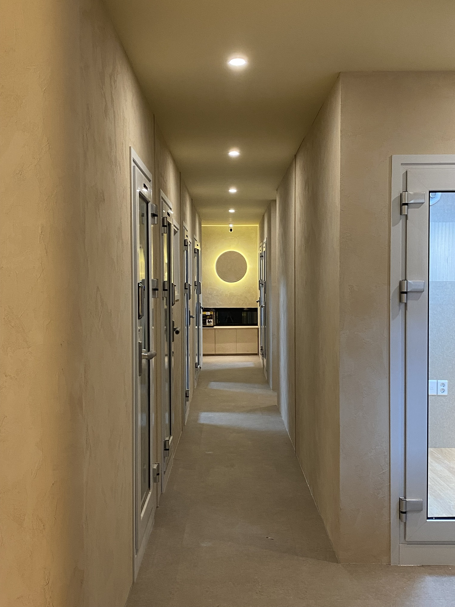
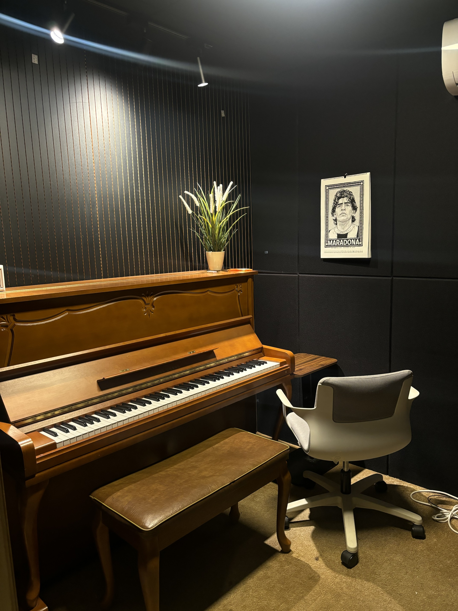

ENOCH MUSIC ACADEMY
01 / 05
ADMISSION
수시에 떨어졌다면?
정시 실기 준비 체크리스트
ENOCH MUSIC ACADEMY
02 / 05
REVIEW
수시 실기를
다시 돌아보기

ENOCH MUSIC ACADEMY
03 / 05
REPERTOIRE
곡을 바꿀지,
다듬을지
ENOCH MUSIC ACADEMY
04 / 05
SCHEDULE
실기 날짜에서
거꾸로 세어 보기
ENOCH MUSIC ACADEMY
05 / 05
정시 준비,
혼자 하지 않으셔도 돼요
에녹실용음악학원 시흥점 · 경기도 시흥시 은행로 157 2층 · 031 315 3666